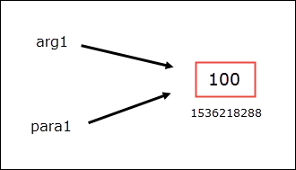

Functions in Python
Last updated on September 22, 2020
So far in this course, we have been using built-in functions that comes with Python. In this lesson we will learn how we can create our own functions. But before we do that, let's spend some time learning why we even need them in the first place.
Suppose you want to create a program which allows users to calculate sum between two numbers. At this point, you shouldn't have any problem writing such programs; anyway, your code might look look this:
1 2 3 4 5 6 7 | sum = 0
start = 10
end = 30
for i in range(start, end+1):
sum += i
print("Sum is", sum)
|
This program calculates the sum of all numbers from 10 to 30. If we want to calculate sum of numbers from 100 to 200, we would need to update the program as follows:
1 2 3 4 5 6 7 | sum = 0
start = 100
end = 200
for i in range(start, end+1):
sum += i
print("Sum is", sum)
|
As you can see both versions of the program is nearly identical, the only difference is in the values of the start and end variables. So everytime we want to calculate sum of two numbers, we would need to update source of the program. It would be good if we somehow just reuse the entire code without doing any modification. We can do that using functions.
What is a Function #
A function is named group of statements, which perform a specific task. The syntax of defining a function is as follows:
1 2 3 4 5 6 7 | def function_name(arg1, arg2, arg3 ... argN):
# function body
<indented statement 1>
<non-indented statement 2>
...
<indented statement n>
<return statement>
|
A function consists of two parts: header and body. The function header starts with the def keyword, followed by name of the function, followed by arguments and ends with a colon (:).
The def is a reserved keyword, so you shouldn't use it as a variable or function name in your programs. function_name can be be any valid identifier. After the function name we have a list of arguments inside parentheses separated by comma (,). We use these arguments to pass necessary data to the function. A function can take any number of arguments or none at all. If function doesn't accept any argument then the parentheses is left empty.
In the next line, we have a block of statements or function body. The function body contains statements which defines what the function does. As usual, Python uses indentation of statements to determine when block starts and ends. All the statements in the body of the function function must be equally indented otherwise you will get a syntax error.
Pay special attention to the last statement in the function body i.e <return statement>. The return statement is used to return a value from the function. The return statement is not mandatory, some function return values while other don't. If a function doesn't have return statement in the body then a reserved keyword None is returned automatically. None is actually an object of a built-in type NoneType. Don't worry if you find return statement confusing; they are not, we will discuss return statement in detail in the upcoming section.
Here is small function which prints current date and time along with a greeting:
python101/Chapter-13/first_function.py
1 2 3 4 5 | import datetime
def greet():
print("Hello !")
print("Today is", datetime.datetime.now())
|
The greet() function doesn't accept any arguments, that's why parentheses is left empty. The function body contains two print() statements. These two statement will be executed when we call greet() function. The greet() function doesn't return any value.
Function Call #
A function definition does nothing by itself. To use a function we must call it. The syntax of calling a function is as follows:
function_name(arg1, arg2, arg3, ... argN)
If function doesn't accept any arguments then use the following syntax:
function_name()
The following code calls greet() function:
greet() # calling greet() function
python101/Chapter-13/calling_first_function.py
1 2 3 4 5 6 7 | import datetime
def greet():
print("Hello !")
print("Today is", datetime.datetime.now())
greet()
|
Output:
1 2 | Hello !
Today is 2017-06-20 13:20:45.281651
|
The function call must appear after the function is defined otherwise, you will encounter NameError exception. For example:
python101/Chapter-13/call_before_definition.py
1 2 3 4 5 6 7 | import datetime
greet() ## ERROR: trying to call greet() before its defined
def greet():
print("Hello !")
print("Today is", datetime.datetime.now())
|
Output:
1 2 3 4 5 | q@vm:~/python101/Chapter-13$ python call_before_definition.py
Traceback (most recent call last):
File "call_before_definition.py", line 3, in <module>
greet() ## ERROR: trying to call greet() before its defined
NameError: name 'greet' is not defined
|
When a function is called the program control jumps to that function definition and executes the statements inside the function body. After executing the body of the function, the program control jumps back to the part of the program which called the function, and resumes execution at that point.
The following example demonstrates what happens when a function is called.
python101/Chapter-13/transfer_of_control.py
1 2 3 4 5 6 7 8 9 | import datetime
def greet():
print("Hello !")
print("Today is", datetime.datetime.now())
print("Before calling greet()")
greet()
print("After calling greet()")
|
Output:
1 2 3 4 | Before calling greet()
Hello !
Today is 2017-06-20 13:20:45.281651
After calling greet()
|
In lines 3-5, we have defined a greet() statement. The print() statement in line 7, prints string "Before calling greet()" to the console. In line 8, we are calling greet() function. At this point, the execution of statements following the call to greet() halts and program control jumps to the definition of the greet() function. After executing the body of the greet() function program control again jumps back to the point where it left off and resumes the execution from there.
Our previous program has only function. It is not unusual for programs to have hundreds or even thousands of functions. In python, it a common convention to define a function called main() which gets called when the program start. This main() function then goes on to call other function as needed. The following program demonstrates flow of program control when we have two functions in a program.
python101/Chapter-13/two_func_program_control.py
1 2 3 4 5 6 7 8 9 10 11 12 13 | import datetime
def greet(name):
print("Hello", name, "!")
print("Today is", datetime.datetime.now())
def main():
print("main() function called")
greet("Jon")
print("main() function finished")
main()
|
In lines 3-5, and 8-11, we have defined two functions greet() and main(). The greet() function is now updated to accept an argument called name, which it then uses in the next line to greet the user.
The main() function doesn't accept any arguments and has three statements inside the body.
The statement in line 13, calls the main() function. The program control jumps to the body of the main() function. The first statement inside the main() prints string "main() function called" to the console. The statement in line 10, calls the greet() function with an argument "Jon" which will be assigned to the variable name in the function header. At this point, execution of statements following call to greet() halts and program control jumps to the body of the greet() function. After executing the body of the greet() function, program control jumps back to where it left off and executes the print() statement in line 11. As there are no more statements left to execute in the main() function and program control jumps again back to where it left off to execute statements after the function call (line 13).
Local Variables, Global Variables and Scope #
Variable Scope: The scope of a variable refers to the part of the program where it can be accessed.
The variable we create inside the function are called local variables. Local variables can only be accessed inside the body of the function in which it is defined. In other words, the scope of local variable starts from the point they are defined and continues on until the end of the function. Local variables are subject to garbage collection as soon as the function ends. As a result, trying to access a local variable outside it's scope will result in an error.
On the other end of the spectrum, we have Global variables. The Global variable are variables that are defined outside of any functions. The scope of global variable starts from the point they are defined and continues on until the program ends.
Now consider the following examples:
Example 1:
python101/Chapter-13/variable_scope.py
1 2 3 4 5 6 7 8 9 10 11 12 13 14 15 16 17 18 19 | global_var = 200 # a global variable
def func():
# local_var is a local variable
# and is only available inside func()
local_var = 100
print("Inside func() - local_var =", local_var)
# accessing a global variable inside a function
print("Inside func() - global_var =", global_var)
func()
print("Outside func() - global_var =", global_var)
# print("Outside func() - local_var =", local_var) # ERROR: local_var is not available here
|
Output:
1 2 3 | Inside func() - local_var = 100
Inside func() - global_var = 200
Outside func() - global_var = 200
|
In line 1, we have created a global variable named global_var. It is then accessed in line 12, inside the func() function and in line 17, outside the function. We have also declared a local variable named local_var inside the function func(). It is then accessed inside the function in line 9.
Let's see what happens, if we try to access a local variable outside the function. To do so, uncomment the code in line 19 and run program again.
Output:
1 2 3 4 5 6 7 | Inside func() - local_var = 100
Inside func() - global_var = 200
Outside func() - global_var = 200
Traceback (most recent call last):
File "variable_scope.py", line 37, in <module>
print("Outside func() - local_var =", local_var)
NameError: name 'local_var' is not defined
|
NameError: name 'local_var' is not defined tells us that there is no variable named local_var exists in this scope.
What if we have local and global variables of same name ? Consider the following program.
Example 2:
python101/Chapter-13/same_global_and_local.py
1 2 3 4 5 6 7 8 | num = "global" # global num variable
def func():
num = "local" # local num variable is entirely different from global num variable
print(num)
func()
print(num)
|
Output:
1 2 | local
global
|
Here we have a global variable num in line 1 and a local variable of the same name inside the function in line 4. Whenever there is a conflict between a local and global variable inside the function, the local variable gets the precedence. This is the reason why print() function (line 5) prints the value of the local num variable. However, outside the function num refers to the global num variable.
We can also use the same variable names in different functions without conflicting with each other.
python101/Chapter-13/same_variable_names_in_different_functions.py
1 2 3 4 5 6 7 8 9 10 11 12 13 14 15 16 17 | def func_1():
x = 100 # this x is only visible inside func_1()
print("func_1(): x =", x)
x = 200
print("func_1(): x =", x)
def func_2():
x = "str" # this x is only visible inside func_2() and it entirely different from func1()'s variable x
print("func_2(): x =", x)
x = "complex"
print("func_2(): x =", x)
# x is not visible in here
func_1()
func_2()
|
Output:
1 2 3 4 | func_1(): x = 100
func_1(): x = 200
func_2(): x = str
func_2(): x = complex
|
Passing Arguments #
An argument is nothing but a piece of data passed to the function, when it is called. As said before, a function can take any number of arguments or none at all. For example, print() function accepts one or more arguments but random.random() function accepts none.
If you want a function to receive arguments, when it is called, we must first define one or more parameters. A parameter or parameter variable is simply a variable in the function header which receives an argument when the function is called. Just like local variables, the scope of parameter variables is only limited to the body of the function. Here is an example of a function which accepts a single argument:
1 2 | def add_100(num):
print("Result =", num+100)
|
When function add_100() is called with an argument, the value of the argument is assigned to the variable num and the print() statement prints the value of num after adding 100 to it.
The following program demonstrates how to call a function with argument.
python101/Chapter-13/function_argument.py
1 2 3 4 5 6 | def add_100(num): # num is a parameter
print("Result =", num+100)
x = 100
add_100(x)
|
Output:
Result = 200
In line 6, function add_100() is called with an argument 100. The value of the argument is then assigned to the parameter variable num.
Example 2: Function to calculate the factorial of a number.
python101/Chapter-13/factorial.py
1 2 3 4 5 6 7 8 9 10 | def factorial(n):
f = 1
for i in range(n, 0, -1):
f *= n
n -= 1
print(f)
num = input("Enter a number: ")
factorial(int(num))
|
Output:
1 2 | Enter a number: 4
24
|
The factorial of a number n is defined as the multiplication of all digits from 1 to n.
n! = 1 * 2 * 3 * ... * (n-1) * n
where n! denotes factorial of n. Here are some examples:
1 2 | 6! = 1 * 2 * 3 * 4 * 5 * 6
4! = 1 * 2 * 3 * 4
|
Now, let's see how the for loop works when the value of n is 4:
| Before for loop starts | i not defined |
f = 1 |
n = 4 |
|---|---|---|---|
| After 1st iteration | i = 4 |
f = n * f = 4 * 1 = 4 |
n = 3 |
| After 2nd iteration | i = 3 |
f = n * f = 3 * 4 = 12 |
n = 2 |
| After 3rd iteration | i = 2 |
f = n * f = 2 * 12 = 24 |
n = 1 |
| After 4th iteration | i = 1 |
f = n * f = 1 * 24 = 24 |
n = 0 |
After the 4th iteration loop terminates and print() function prints the factorial of the number.
Example 3: Passing multiple arguments to the function
python101/Chapter-13/multiple_arguments.py
1 2 3 4 5 6 7 8 | def calc(num1, num2):
print("Sum =", num1 + num2)
print("Difference =", num1 - num2)
print("Multiplication =", num1 * num2)
print("Division =", num1 / num2)
print() # prints a blank line
calc(10, 20)
|
Output:
1 2 3 4 | Sum = 30
Difference = -10
Multiplication = 200
Division = 0.5
|
When calc() function is called in line 8, the argument 10 is passed to parameter variable num1 and 20 is passed to parameter variable num2.
The order of arguments passed while calling the function must match order of parameters in the function header, otherwise, you may get unexpected results.
Pass by Value #
Recall that everything in Python is object. So a variable for an object, is actually a reference to the object. In other words, a variable stores the address where an object is stored in the memory. It doesn't contain the actual object itself.
When a function is called with arguments, it is the address of the object stored in the argument is passed to the parameter variable. However, just for the sake of simplicity, we say the value of argument is passed the to the parameter while invoking the function. This mechanism is known as Pass By Value. Consider the following example:
1 2 3 4 5 6 7 | def func(para1):
print("Address of para1:", id(para1))
print(para1)
arg1 = 100
print("Address of arg1:", id(arg1))
func(arg1)
|
Output:
1 2 3 | Address of arg1: 1536218288
Address of para1: 1536218288
100
|
Notice that the id values are same. This means that variable arg1 and para1 references the same object. In other words, both arg1 and para1 points to the same memory location where int object (100) is stored.

This behavior has two important consequences:
If arguments passed to function is immutable, then the changes made to the parameter variable will not affect the argument.
However, if the argument passed to the function is mutable, then the changes made to the parameter variable will affect the argument.
Let's examine this behavior by taking some examples:
Example 1: Passing immutable objects to function.
python101/Chapter-13/passing_immutable_objects.py
1 2 3 4 5 6 7 8 | def func(para1):
para1 += 100 # increment para1 by 100
print("Inside function call, para1 =", para1)
arg1 = 100
print("Before function call, arg1 =", arg1)
func(arg1)
print("After function call, arg1 =", arg1)
|
Output:
1 2 3 | Before function call, arg1 = 100
Inside function call, para1 = 200
After function call, arg1 = 100
|
In line 7, func() is called with an argument arg1 (which points to an immutable object int). The value of arg1 is passed to the parameter para1. Inside the function value of para1 is incremented by 100 (line 3). When the function ends, the print statement in line 8 is executed and the string "After function call, arg1 = 100" is printed to the console. This proves the point that no matter what function does to para1, the value of arg1 remains the same.
If you think about it this behavior makes perfect sense. Recall that the contents of immutable objects can't be changed. So whenever we assign a new integer value to a variable we are essentially creating a complete new int object and at the same time assigning reference of the new object to the variable. This is exactly what's happening inside the func() function.
Example 2: Passing mutable objects to function
python101/Chapter-13/passing_mutable_objects.py
1 2 3 4 5 6 7 8 | def func(para1):
para1.append(4)
print("Inside function call, para1 =", para1)
arg1 = [1,2,3]
print("Before function call, arg1 =", arg1)
func(arg1)
print("After function call, arg1 =", arg1)
|
Output:
1 2 3 | Before function call, arg1 = [1, 2, 3]
Inside function call, para1 = [1, 2, 3, 4]
After function call, arg1 = [1, 2, 3, 4]
|
The code is almost the same, but here we are passing a list to the function instead of an integer. As list is a mutable object, consequently changes made by the func() function in line 2, affects the object pointed to by variable arg1.
Positional and Keyword Arguments #
Arguments to a function can be passed in two ways:
- Positional argument.
- Keyword argument.
In the first method, we pass arguments to a function in the same order as their respective parameters in the function header. We have been using this method to pass arguments to our functions. For example:
python101/Chapter-13/pythagorean_triplets.py
1 2 3 4 5 | def is_pythagorean_triplet(base, height, perpendicular):
if base ** 2 + height ** 2 == perpendicular ** 2:
print("Numbers passed are Pythagorean Triplets")
else:
print("Numbers passed are not Pythagorean Triplets")
|
The statement is_pythagorean_triplet(3, 4, 5) passes 3 to base, 4 to height and 5 to perpendicular, and prints "Numbers passed are Pythagorean Triplets". However, the statement is_pythagorean_triplet(3, 5, 4), passes 3 to base, 5 to height and 4 to perpendicular and prints "Numbers passed are not Pythagorean Triplets", which is wrong. So when using positional arguments always make sure that order of arguments in function call and order of parameters in function header matches. Otherwise, you may get expected results.
The other way to pass arguments to a function is to use Keyword arguments. In this method we pass each argument in the following form:
parameter_name = val
where parameter_name is the name of the parameter variable in the function header and val refers to the value you want to pass to the parameter variable. Because, we are associating parameter name with values, the order of arguments in the function call doesn't matter.
Here are some different ways in which we can call is_pythagorean_triplet() function using keyword arguments:
1 2 3 4 5 | is_pythagorean_triplet(base=3, height=4, perpendicular=5)
is_pythagorean_triplet(base=3, perpendicular=5, height=4)
is_pythagorean_triplet(perpendicular=5, height=4, base=3)
|
Keyword arguments are little bit flexible because we don't have to remember the order of parameters in the function header.
Mixing Positional and Keyword arguments #
We can also mix positional arguments and keyword arguments in a function call. In doing so, the only requirement is that positional arguments must appear before any keyword arguments. It means that the following two calls are perfectly valid because in both calls positional arguments are appearing before keyword arguments.
1 2 3 4 | ## valid
is_pythagorean_triplet(3, 4, perpendicular=5)
is_pythagorean_triplet(3, perpendicular=5, height=4)
|
However, we can't do this:
1 2 3 | # not valid
is_pythagorean_triplet(3, height=4, 5)
|
The problem here is that the positional argument (5) is appearing after the keyword argument (height=4). Trying to call is_pythagorean_triplet() in this way results in the following error:
1 2 3 4 | File "pythagorean_triplets.py", line 8
is_pythagorean_triplet(3, height=4, 5)
^
SyntaxError: positional argument follows keyword argument
|
Returning Values #
Up to this point, we have been creating functions that don't return any values, such functions are also known as void functions.
To return value from a function we use the return statement. It's syntax is:
return [expression]
The square brackets ([]) around the expression indicates that it is optional. If omitted a special value None is returned.
When return statement is encountered inside a function, the function terminates and the value of the expression followed by the return keyword is sent back to the part of the program that called the function. The return statement can appear anywhere in the body of the function. The functions which returns values are known as value-returning functions.
Here is an example:
1 2 | def add(num1, num2):
return num1 + num2
|
A function can be called in two ways, depending upon whether they return value or not.
If a function returns a value then a call to such a function can be used as an operand in any expression in the program. For example:
result = add(12, 10)
In the above expression, we are first calling the add() function, and then assigning the return value of the function to the result variable. Had we not used the return statement in the add() function, we wouldn't be able to write this code. Here are some other ways in which we can call add() function.
1 2 3 4 5 6 | result = add(12, 10) * 10 # return value of add() is multiplied by 10 and then assigned to result
if add(12, 10) == 100: # return value of add() is compared with 100 in the if statement
print("It is True")
print(add(12, 10)) # return value of add() is printed
|
We are not bound to use the return value from the function. If we don't want to use the return value, just call the function as a statement. For example:
add(12, 10)
In this case, the return value of add() is simply discarded.
Let's rewrite our factorial program to return the factorial instead of printing it.
python101/Chapter-13/return_factorial.py
1 2 3 4 5 6 7 8 9 10 11 | def factorial(n):
f = 1
for i in range(n, 0, -1):
f *= n
n -= 1
return f
print("Factorial of 4 is", factorial(4))
print("Factorial of 4 is", factorial(6))
|
Output:
1 2 | Factorial of 4 is 24
Factorial of 4 is 720
|
In the above example, we are returning an integer value from the function, but we can use any type of data int, float, str, bool; you name it. The following program demonstrates how to return bool type from the function:
python101/Chapter-13/is_even_or_odd.py
1 2 3 4 5 6 7 8 9 10 11 12 13 | def is_even(number):
if number % 2 == 0:
return True
else:
return False
num = int(input("Enter a number: "))
if is_even(num):
print(num, "is even")
else:
print(num, "is odd")
|
1st run Output:
1 2 | Enter a number: 13
13 is odd
|
2nd run Output:
1 2 | Enter a number: 456
456 is even
|
If expression followed by the return keyword is omitted then a special value None is returned.
python101/Chapter-13/returning_none.py
1 2 3 4 5 | def foo():
return
result = foo()
print(result)
|
Output:
None
We can also use the return statement multiple times inside the function but as soon as the first return statement is encountered the function terminates and all the statements following it are not executed. For example:
python101/Chapter-13/grade_calculator.py
1 2 3 4 5 6 7 8 9 10 11 12 13 14 15 | def calculate_grade(marks):
if marks >= 90:
return 'A'
elif marks >= 80:
return 'B'
elif marks >= 70:
return 'C'
elif marks >= 60:
return 'D'
else:
return 'F'
m = int(input("Enter your marks: "))
print("Your grade is", calculate_grade(m))
|
First run output:
1 2 | Enter your marks: 68
Your grade is D
|
Second run output:
1 2 | Enter your marks: 91
Your grade is A
|
Void Function returns None. #
In Python, void functions are slightly different than functions found in C, C++ or Java. If the function body doesn't have any return statement then a special value None is returned when the function terminates. In Python, None is a literal of type NoneType which used to denote absence of a value. It is commonly assigned to a variable to indicate that the variable does not points to any object.
The following program demonstrates that the void functions return None.
python101/Chapter-13/void_function.py
1 2 3 4 5 | def add(num1, num2):
print("Sum is", num1 + num2)
return_val = add(100, 200)
print(return_val)
|
Output:
1 2 | Sum is 300
None
|
Sure enough! add() function indeed returns None. So we can say that in Python, all functions return value whether you use return statement or not. However, this doesn't mean that you can use void functions just like a value-returning function. Consider the following example:
python101/Chapter-13/using_void_function_as_non_void_function.py
1 2 3 4 | def add(num1, num2):
print("Sum is", num1 + num2)
result = add(10, 200) + 100
|
Output:
1 2 3 4 5 | Sum is 210
Traceback (most recent call last):
File "using_void_function_as_non_void_function.py", line 5, in <module>
result = add(10, 200) + 100
TypeError: unsupported operand type(s) for +: 'NoneType' and 'int'
|
In line 5, we are trying to add value returned from add() i.e None to the integer 100, but the operation failed because the + operation can't add NoneType to int.
That's why a void function is generally invoked as a statement like this:
add(100, 200)
Returning Multiple Values #
To return multiple values from a function just specify each value separated by comma (,) after the return keyword.
return val1, val2, val3, ..., valN
When calling a function returning multiple values, the number of variables on the left side of = operator must be equal to the number of values returned by the return statement. So if a function returns two values then you must use 2 variables on the left side of = operator. Here is an example:
python101/Chapter-13/returning_multiple_values.py
1 2 3 4 5 6 7 8 9 10 | def sort_two_num(num1, num2):
if num1 < num2:
return num1, num2
else:
return num2, num1
number1, number2 = sort_two_num(100, 15)
print("number1 is", number1)
print("number2 is", number2)
|
Output:
1 2 | number1 is 15
number2 is 100
|
Notice how values are assigned while calling the function. The statement:
number1, number2 = sort_two_num(100, 15)
assigns smaller number to variable number1 and greater number to variable number2.
Default Arguments #
In Python, we can define a function with default parameter values, this default value will be used when a function is invoked without any argument. To specify the default value for the parameter just specify the value using the assignment operator followed by the parameter name. Consider the following example:
python101/Chapter-13/setting_default_values.py
1 2 3 4 5 6 7 8 9 10 | def calc_area(length=2, width=3):
print("length=", length, ", width = ", width)
print("Area of rectangle is", width * length)
print()
calc_area()
calc_area(4, 6)
calc_area(width=100, length=23)
calc_area(length=12)
|
Output:
1 2 3 4 5 6 7 8 9 10 11 | length= 2 , width = 3
Area of rectangle is 6
length= 4 , width = 6
Area of rectangle is 24
length= 23 , width = 100
Area of rectangle is 2300
length= 12 , width = 3
Area of rectangle is 36
|
In line 7, we are calling function calc_area() without any arguments, so default values 2 and 3 will be assigned to length and width parameters respectively.
In line 8, we are calling calc_area() by passing 4 to length and 6 to width. As values to both the parameters are provided while calling the function, the default value will not be used in this case. The same is true for calc_area() call in line 9, except here we are using keyword arguments.
In line 10, we are only providing value to length parameter using keyword argument, as a result, default value for width parameter will be used.
Load Comments